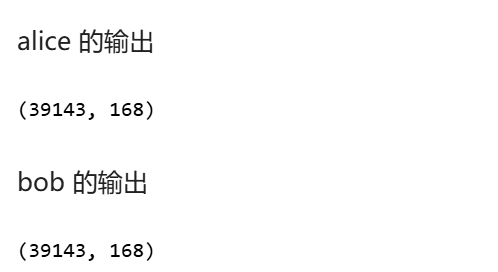
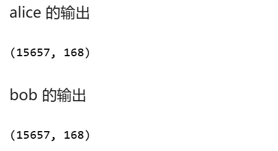
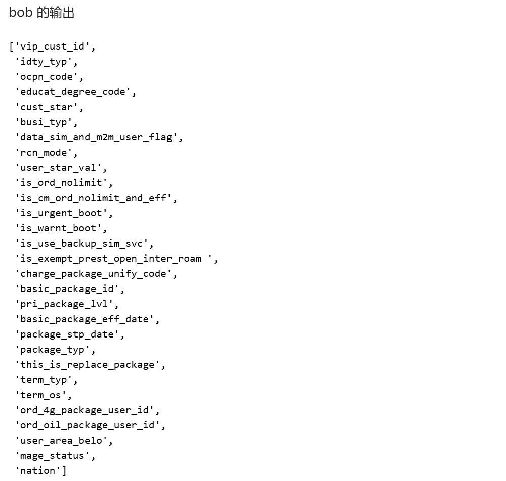
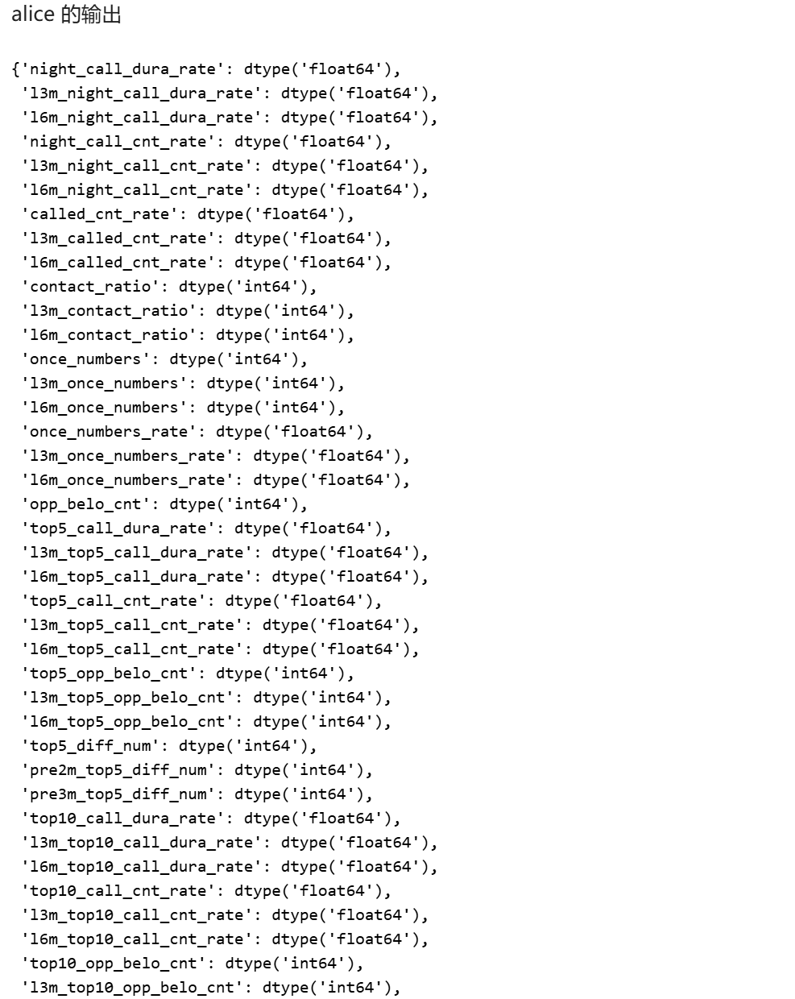
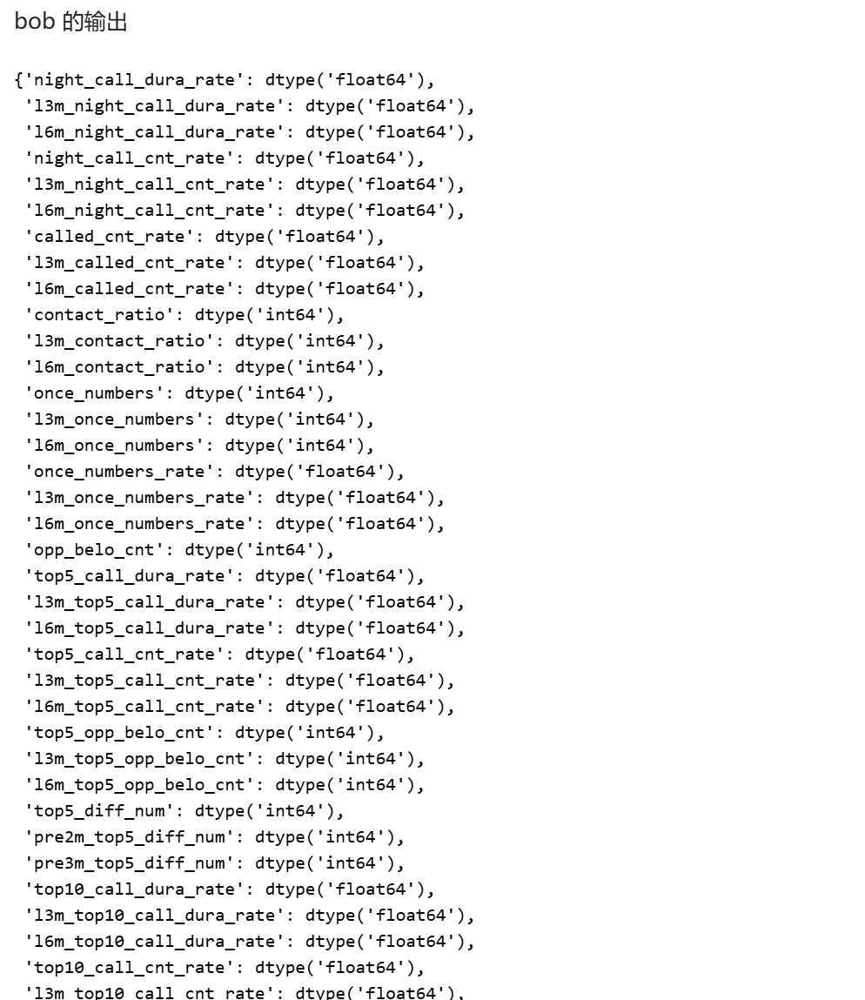

实验四：诈骗电话识别（FL应用）¶
一、实验准备¶
1.1 实验背景¶
电信诈骗日益猖獗，给用户带来了严重的财产损失和不良社会影响。电信运营商掌握着大量用户行为数据，如通话记录、套餐使用、上网流量等，这些数据对于识别诈骗电话具有重要价值。然而，不同运营商之间的数据通常是孤立的，直接共享这些敏感数据又会面临严格的法律法规限制和用户隐私泄露风险。
本案例模拟了某地运营商 A (alice) 与运营商 B (bob) 的合作场景。双方希望整合各自持有的用户特征数据，联合构建一个更精准的诈骗电话识别模型，同时确保在整个建模过程中，各方的原始数据不被泄露给对方，计算结果也得到妥善保护。这正是纵向联邦学习（Vertical Federated Learning, VFL）技术能够发挥关键作用的场景。
1.2 技术介绍¶
本次实验的核心是纵向联邦学习 (Vertical Federated Learning, VFL) ，并通过隐语的 SS-XGBoost (Secure Share XGBoost) 实现。
1. 纵向联邦学习 (VFL)¶
- 概念: 纵向联邦学习适用于多个参与方拥有相同用户（样本ID对齐）的不同特征维度的场景。其目标是联合这些分散在各方的特征来训练一个更强大的机器学习模型，而在此过程中，任何一方的原始特征数据都不会暴露给其他方。
-
原理:
-
数据对齐: 首先需要通过隐私集合求交（PSI）或其他方式，安全地对齐各方共有的用户样本。在本 notebook 中，
read_csv 在没有显式keys 参数时，通常假设数据是预对齐的，或按行顺序对齐。 -
模型联合训练:
- 模型参数（如神经网络的权重、树模型的分裂规则）的计算会涉及到多方的特征。
- 拥有标签的一方（在本例中是
alice）通常会主导部分计算流程，例如损失和梯度的计算。 - 其他方（如
bob）则根据其本地特征计算中间结果（如梯度的部分和、特征的最佳分裂点信息等）。 - 这些中间结果通过安全多方计算（MPC）或同态加密（HE）等技术进行安全聚合和交互，以更新模型参数或做出决策（如选择最佳分裂特征和阈值），而无需共享原始特征。
- 应用场景: 金融风控（如银行与电商联合建模）、精准营销（如运营商与商家合作）、智慧医疗（如不同医院间联合分析病例数据）等。本实验的诈骗电话识别即是一个典型应用。
2. SS-XGBoost (Secure Share XGBoost)¶
隐语中的 secretflow.ml.boost.ss_xgb_v.Xgb 实现了一种安全的纵向联邦 XGBoost，通常被称为 SS-XGBoost，其思想与 SecureBoost 类似。
- 概念: SS-XGBoost 是一种在纵向联邦学习设定下，以隐私保护方式训练 XGBoost 模型的算法。它允许多方协同构建一棵决策树（或多棵树的集成），而每一方只贡献其拥有的特征。
-
原理:
-
标签方启动: 持有标签的一方（
alice）通常负责计算当前模型的预测误差（即梯度和黑塞矩阵，作为伪标签）。 - 特征方枚举分裂点: 对于每一棵待构建的树的每个节点，所有参与方（
alice 和bob）都会在各自的特征上枚举候选的分裂点。 -
安全计算信息增益:
- 各方根据伪标签和其候选分裂点，计算这些分裂点对应的梯度统计信息（如每个桶内的梯度和与黑塞和）。
- 这些统计信息通过 SPU（利用 MPC 协议，如
SEMI2K）进行安全地聚合和比较。SPU 会计算出每个候选分裂的信息增益（或类似指标），并找出全局最佳的分裂特征和分裂点。 - 在此过程中，SPU 确保了任何一方都无法得知其他方的具体梯度值或特征值，只能得到最终的最佳分裂决策。
- 节点分裂与树生长: 根据 SPU 返回的最佳分裂信息，样本被分配到左右子节点。此过程递归进行，直到满足停止条件（如达到最大深度、节点样本数过少等）。
- 叶节点权重计算: 树构建完成后，叶子节点的权重也需要在 SPU 的协助下安全计算。
- 迭代建树: XGBoost 是一个集成模型，会依次构建多棵树 (
num_boost_round 参数控制树的数量)。 - 隐私保护:
-
特征隔离: 各方的特征数据始终保留在本地。
- 标签隐私:
alice 的标签信息（或其衍生的梯度信息）在交互过程中也受到保护。 - 中间结果安全: 依赖 SPU 的 MPC 能力，所有需要多方数据参与的计算（如信息增益比较）都在密态或安全共享下完成。
二、实验目标¶
本次实验的核心目标是：
- 掌握 SecretNote 环境下的纵向联邦学习配置: 学会在 SecretNote 平台配置涉及两方（
alice 和bob）的联邦学习环境，包括网络通信和安全计算单元的初始化。 - 理解并应用纵向联邦学习: 学习纵向联邦学习的基本概念，即参与方拥有相同样本的不同特征维度，并在保护隐私的前提下联合建模。
- 实践安全的 XGBoost 模型训练: 利用隐语提供的纵向联邦 XGBoost (SS-XGBoost) 组件，基于双方的特征数据训练一个联合模型，用于识别诈骗电话。
- 实现数据预处理与特征工程: 在联邦学习框架下对数据进行必要的预处理，如数据加载、划分、缺失特征删除和缺失值填充。
- 验证模型训练的隐私保护: 确保在模型训练的各个环节（如梯度计算、分裂点查找等），双方的原始数据和关键中间结果都得到了隐私保护，符合“原始数据不出域”的要求。
三、实验步骤¶
本实验在隐语 SecretNote 平台进行，涉及运营商 A (alice) 和运营商 B (bob) 两个参与方。
1. 实验配置¶
此步骤与之前的实验类似，用于初始化多方安全计算和联邦学习所需的环境。
1.1 添加节点与获取端口¶
- 操作: 在 SecretNote 平台添加
alice 和bob 节点，并获取各自的 IP 地址。 - 运行: 分别为
alice 和bob 运行以下代码块，获取未被占用的端口号，并记录下来，用于后续的 Ray-Fed 和 SPU 配置。
import socket
from contextlib import closing
from typing import cast
def unused_tcp_port() -> int:
"""返回一个未使用的端口"""
with closing(socket.socket(socket.AF_INET, socket.SOCK_STREAM)) as sock:
sock.bind(("", 0))
sock.setsockopt(socket.SOL_SOCKET, socket.SO_REUSEADDR, 1)
return cast(int, sock.getsockname()[1])
print(unused_tcp_port())

1.2 配置并初始化 Ray-Fed¶
- 操作: 根据实际获取的 IP 地址和端口号，配置
cluster_config。 -
运行: 分别为
alice 和bob 运行对应的代码块，以初始化 SecretFlow 环境并建立参与方之间的通信。两个代码块需要同时选中两个参与方一起执行。 -
Alice 端:
- Bob 端:import secretflow as sf cluster_config = { "parties": { "alice": { # 替换为 alice 的实际 IP 和 Ray-Fed 端口 "address": "172.16.0.37:57527", "listen_addr": "0.0.0.0:57527" }, "bob": { # 替换为 bob 的实际 IP 和 Ray-Fed 端口 "address": "172.16.0.45:44081", "listen_addr": "0.0.0.0:44081" }, }, 'self_party': 'alice' } sf.init(address="127.0.0.1:6379", cluster_config=cluster_config)import secretflow as sf cluster_config = { "parties": { "alice": { # 替换为 alice 的实际 IP 和 Ray-Fed 端口 "address": "172.16.0.37:57527", "listen_addr": "0.0.0.0:57527" }, "bob": { # 替换为 bob 的实际 IP 和 Ray-Fed 端口 "address": "172.16.0.45:44081", "listen_addr": "0.0.0.0:44081" }, }, 'self_party': 'bob' } sf.init(address="127.0.0.1:6379", cluster_config=cluster_config)
1.3 配置并初始化 SPU (Secure Processing Unit)¶
- 操作: 再次运行
unused_tcp_port 获取新的端口号，用于 SPU 配置。SPU 是执行多方安全计算（如 XGBoost 训练过程中的加密计算）的核心组件。 -
运行:
-
获取 SPU 端口（双方运行）：
 2. 配置并创建 SPU 实例（同时选中两个参与方运行）：
2. 配置并创建 SPU 实例（同时选中两个参与方运行）：import spu spu_conf = { "nodes": [ { "party": "alice", # 替换为 alice 的实际 IP 和 SPU 端口 "address": "172.16.0.37:45301" }, { "party": "bob", # 替换为 bob 的实际 IP 和 SPU 端口 "address": "172.16.0.45:34761" }, ], "runtime_config": { "protocol": spu.spu_pb2.SEMI2K, # 使用 SEMI2K 协议 "field": spu.spu_pb2.FM128, # 在 128 位域上计算 "sigmoid_mode": spu.spu_pb2.RuntimeConfig.SIGMOID_REAL, # Sigmoid 计算模式 }, } spu_device = sf.SPU( # 将 SPU 实例命名为 spu_device 以区分库名 cluster_def=spu_conf, link_desc={ "connect_retry_times": 60, "connect_retry_interval_ms": 1000 }, )
1.4 创建 PYU 实例¶
- 操作: 为
alice 和bob 创建 PYU (Python Unit) 实例，代表各方的明文计算环境。 - 运行: 同时选中两个参与方运行。
2. 加载纵向联邦数据集¶
本实验中，数据是纵向划分的，即 Alice 和 Bob 持有相同用户（样本）的不同特征。Alice 方还持有标签数据。
2.1 定义文件路径¶
- 操作: 获取当前工作目录，并定义 Alice 和 Bob 各自的训练数据文件路径和测试数据文件路径。
- 运行: 同时选中两个参与方运行。
import os
from secretflow.data.vertical import read_csv
from secretflow.data.split import train_test_split
current_dir = os.getcwd()
print(f"当前工作目录: {current_dir}")
# 训练集路径
alice_train_input = f"{current_dir}/train_a_label.csv" # Alice 的训练特征和标签
bob_train_input = f"{current_dir}/train_b.csv" # Bob 的训练特征
# 测试集路径
alice_test_input = f"{current_dir}/test_a.csv" # Alice 的测试特征
bob_test_input = f"{current_dir}/test_b.csv" # Bob 的测试特征
2.2 加载训练集和测试集¶
- 操作: 使用
read_csv 函数加载纵向分割的数据集。对于纵向数据，read_csv 会自动根据样本顺序对齐数据，形成一个统一的垂直数据帧 (VDF)。 - 运行: 同时选中两个参与方运行以下代码块。
# 加载训练集
path_dict_train = {
alice: alice_train_input,
bob: bob_train_input,
}
vdf_train_raw = read_csv(path_dict_train)
print(f"原始训练集形状: {vdf_train_raw.shape}")
# 加载测试集
path_dict_test = {
alice: alice_test_input,
bob: bob_test_input,
}
vdf_test = read_csv(path_dict_test) # 测试集暂存，后续特征工程主要对训练集操作
print(f"原始测试集形状: {vdf_test.shape}")

2.3 划分训练集与验证集¶
- 操作: 将加载的原始训练集
vdf_train_raw 按照 4:6 的比例划分为新的训练集vdf_train 和验证集valid_vdf。 - 运行: 同时选中两个参与方运行。
vdf_train, valid_vdf = train_test_split(vdf_train_raw, train_size=0.4, random_state=0)
print(f"切分后训练集形状: {vdf_train.shape}")
print(f"切分后验证集形状: {valid_vdf.shape}")

3. 特征工程¶
对训练集 vdf_train 进行特征处理。
3.1 删除部分特征¶
- 操作: 根据特征的缺失率（ notebook 中提到原始缺失率超过 65% 的特征）和业务判断（如无用特征），删除指定的列。
- 运行: 同时选中两个参与方运行。
drop_col = [
"vip_lvl", "cmcc_pub_tl_typ_code", "belo_camp_id", "camp_lvl", "memb_typ",
"gsm_user_lvl", "gsm_user_src", "last_one_stp_tm", "cancl_date", "exit_typ",
"befo_pri_package_code", "rcn_chnl_id", "belo_group_cust_id", "rcn_chnl_typ",
"term_brand", "basic_package_prc", "cm_nadd_mkcase_cnt", "cur_eff_sale_cmpn_cnt",
"pretty_num_typ_name", "pretty_num_typ", "term_mdl", "stp_typ"
]
vdf_train_dropped = vdf_train.drop(columns=drop_col)
print(f"删除部分特征后训练集形状: {vdf_train_dropped.shape}")

3.2 缺失值填充¶
-
操作:
-
识别剩余特征中的缺失值。
- 计算这些缺失特征的众数。
- 使用各自特征的众数填充缺失值。
- 运行: 同时选中两个参与方运行。
# 识别含缺失值的列
na_count = vdf_train_dropped.isna().sum()
na_cols = na_count[na_count > 0].index.tolist()
print(f"存在缺失值的列: {na_cols}")
# 计算众数用于填充
na_mode = vdf_train_dropped[na_cols].mode()
fill_value_dict = {}
for col in na_cols:
fill_value_dict[col] = na_mode[col] # na_mode[col] 会返回一个 Series，实际填充时 VDF 会取其第一个值
print(f"各列用于填充的众数值: {fill_value_dict}")
# 执行填充
vdf_train_filled = vdf_train_dropped.fillna(fill_value_dict)
# 验证填充结果
test_na_after_fill = vdf_train_filled.isna().sum()
print(f"填充后仍存在缺失值的列: {test_na_after_fill[test_na_after_fill > 0]}")
# print(f"填充后训练集数据类型: {vdf_train_filled.dtypes}") # 查看数据类型，确保合理


4. 纵向 XGBoost 建模¶
使用处理后的训练集 vdf_train_filled 进行纵向联邦 XGBoost 模型训练。
4.1 定义模型和参数¶
- 操作: 导入
Xgb 模型，并设置 XGBoost 的相关参数。 - 运行: 同时选中两个参与方运行。
from secretflow.ml.boost.ss_xgb_v import Xgb
xgb_model_instance = Xgb(spu_device) # 使用之前创建的 SPU 实例
params = {
'num_boost_round': 3, # 树的数量
'max_depth': 3, # 树的最大深度
'sketch_eps': 0.25, # 用于分位数近似的参数
'objective': 'logistic', # 目标函数：二分类逻辑回归
'reg_lambda': 0.2, # L2 正则化系数
'subsample': 0.1, # 样本采样比例
'colsample_by_tree': 0.1, # 每棵树的特征采样比例
'base_score': 0.5, # 初始预测分数
}
4.2 准备训练数据并拟合模型¶
- 操作: 从填充后的训练数据中分离特征 (
train_x) 和标签 (train_y)。Alice 方持有标签label。然后调用xgb_model_instance.train 进行模型训练。 - 运行: 同时选中两个参与方运行。
train_x = vdf_train_filled.drop(columns=['label']) # 特征
train_y = vdf_train_filled['label'] # 标签 (仅 Alice 方有实际值)
print("开始纵向 XGBoost 模型训练...")
# 注意：实际训练中，模型实例变量名和 xgb_model_instance 可能需要统一
model = xgb_model_instance.train(params=params, dtrain=train_x, label=train_y)
print("模型训练完成。")
注意: 模型的预测和评估部分在 notebook 中未给出，通常在训练完成后，会使用 model.predict(vdf_test_processed) 进行预测，并结合测试集真实标签计算 AUC 等指标。


四、实验结果与分析¶
1. 实验主要输出¶
-
数据加载与划分:
-
原始训练集形状: (39143, 168)
- 原始测试集形状: (9786, 167) (Alice 方少一列，因为测试集 Alice 端没有标签)
- 切分后训练集形状: (15657, 168)
- 切分后验证集形状: (23486, 168)
-
特征工程:
-
删除指定列后训练集形状: (15657, 146)
- 输出了大量包含缺失值的列名，以及用于填充这些列的众数值。
- 填充后检查，确认不再有缺失值。
-
纵向 XGBoost 模型训练日志: 输出了详细的训练过程日志，包括：
-
prepare time,global_setup time,build & infeed bucket_map time,init_pred time。 - 每个 epoch (树) 的构建信息：
tree_setup time。 - 每个 fragment (特征子集) 的
gradient sum time。 - 树的每一层 (
level) 的构建时间。 - 每个 epoch (树) 的总构建时间。
- JAX 后端初始化警告和
unidecode 警告。
2. 结果分析¶
- 数据处理流程: 实验成功完成了数据的加载、纵向对齐、训练集/验证集划分、特征删除和缺失值填充等预处理步骤。这些步骤都在 SecretFlow 的 VDF 框架下完成，为后续的联邦学习建模打下了基础。
- 模型训练过程: 从训练日志可以看出，SS-XGBoost 模型在多个 epoch (对应多棵树) 中进行了迭代训练。日志详细记录了各个阶段的耗时，如数据准备、分桶、梯度计算和树节点分裂。这表明模型训练过程已按预期在 SPU 的安全环境中执行。由于
num_boost_round 设置为 3，模型共构建了 3 棵树。 -
隐私保护: 纵向联邦 XGBoost (SS-XGBoost) 的核心在于其隐私保护机制。在训练过程中：
-
Alice（持有标签方）计算伪标签（梯度和黑塞矩阵）。
- 对于每个特征，拥有该特征的一方（Alice 或 Bob）计算其候选分裂点的统计信息（如梯度和）。
- 这些统计信息通过 SPU 进行安全聚合和比较，以找到全局最佳分裂点，而无需暴露各方的原始特征值或精确的梯度信息。
- 树的结构和叶子节点权重也是通过安全计算得到的。 整个过程确保了双方的原始数据保留在本地，满足了“原始数据不出域”的要求。
-
性能与正确性:
-
正确性: 实验成功完成了 3 轮的 boosting 训练，表明算法流程是通的。由于 notebook 未包含模型评估部分，无法直接判断模型的预测准确率或 AUC。但在实际应用中，需要使用处理后的测试集或验证集对模型性能进行评估。
- 性能: 从日志中可以看出，每个 epoch 的训练（即构建一棵树）耗时在几秒到十几秒不等（例如 epoch 0 耗时约 4.36 秒，epoch 2 耗时约 3.87 秒在 Alice 端）。联邦学习和安全计算不可避免地会引入额外的计算和通信开销，因此其训练速度通常慢于传统的单机明文训练。参数设置（如树的数量、深度、采样率等）以及数据量都会影响训练时长。
五、实验总结¶
本次实验成功地演示了如何利用隐语 SecretFlow 框架，在两个运营商（Alice 和 Bob）之间进行纵向联邦学习，联合训练了一个 XGBoost 模型用于诈骗电话识别。实验完整地覆盖了从环境配置、数据加载与预处理，到核心的 SS-XGBoost 模型训练的全过程。
通过详细的训练日志，我们可以观察到模型在 SPU 的支持下，以隐私保护的方式逐步构建决策树。尽管为了保护隐私引入了额外的计算和通信开销，但实验证明了在不泄露各方原始数据的前提下，联合多方数据力量提升模型性能的可行性。这对于处理跨机构、跨领域的数据合作，特别是在涉及用户隐私的场景下（如金融、电信、医疗），具有重要的实践意义和应用前景。